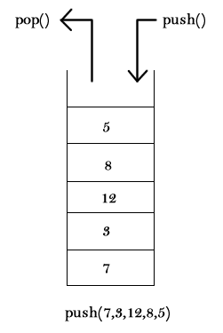

Bão Dimais
O restaurante Bão Dimais precisa que você projete um algoritmo capaz de solucionar o problema de empilhamento de pratos sujos. Você receberá uma lista de números inteiros representando os pratos, na ordem em que eles foram colocados em cima da mesa. Seu objetivo é imprimir a ordem em que os pratos são retirados para serem lavados.

Entrada
Serão dados vários casos de teste. A primeira linha de cada caso contém um número N (1 <= N <= 10000), a quantidade de pratos. N números seguirão na próxima linha, separados por espaços em branco. Estes números vão de 0 até 2^31-1. Você deve ler até EOF.
Saída
Imprima para cada caso de teste a ordem pedida, um número por linha.
Exemplos
Entrada de Teste
3
1 2 3
5
7 3 12 8 5
Saída de Teste
3
2
1
5
8
12
3
7